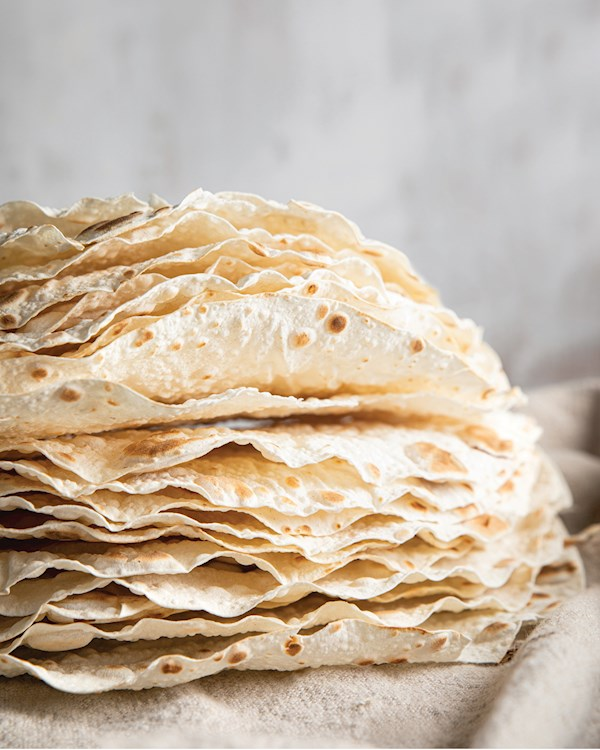

Yufka is a thin round Turkish flatbread made using unleavened flour. It is similar to lavash and is a very easy dish to make and the dough can be made in no time. The only way is to let the dough sit for at least 4 hours to get a nice soft texture on the flatbread. The dough pieces are then rolled into circular sheets. The sheet is then baked on a hot iron plate called a Pouch for 2-3 minutes. Before consumption, the soaked bread is sprayed with warm water then covered with a cotton cloth and rested for 10 to 12 minutes before serving.
Meal prep time : 4 hours 40 minutes
Servings : 5